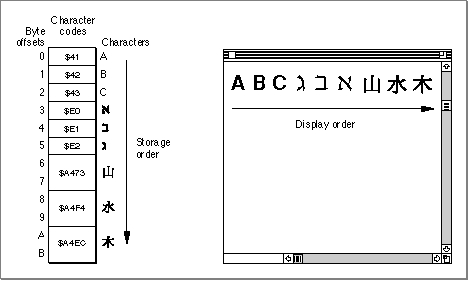
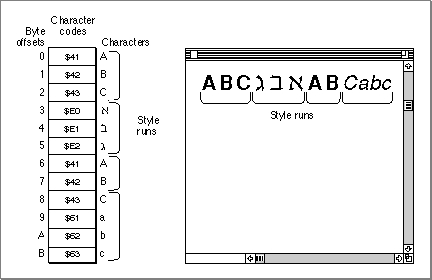

Legacy Document
Important: The information in this document is obsolete and should not be used for new development.
Important: The information in this document is obsolete and should not be used for new development.


Text Storage
In considering how to store text in buffers, strings, and files, it may be clearer if you understand the assumptions that the Macintosh text managers make about your text-storage method. The discussions throughout this book assume that your text is stored and accessed acording to these conventions:
Figure 1-5 Storage order and display order
- Your program stores text as a simple sequence of character codes. The character
codes may be 1-byte or 2-byte codes, but there is nothing else in the text stream
except for those codes. Using font information that your program stores separately, Script Manager routines can help you determine whether a character is 1 or 2 bytes, and other managers allow you to work with either character size.- Character location within a text sequence in memory is in terms of byte offset (not character offset) from the beginning of the text. Offset is zero-based; the first byte in the sequence has an offset of 0.
- The storage order of your text--the sequence in memory in which the character codes occur--is the same as its logical order. It is the order in which the characters would be read or pronounced in the language of the text. Because text of different languages may be read either left-to-right or right-to-left, storage order is not always the same as the left-to-right display order of the text when it is drawn. In Figure 1-5, for example, note that the Hebrew characters are displayed in reverse order from the order in which they are stored.

Figure 1-6 Style runs in text
- All writing-system, font, size, color, and style information about each part of your text is stored separately from the text, and it is your application's responsibility to maintain that information. The text stream itself carries no information about what writing system or font it was created with or is meant to be drawn with; you need to keep track of and supply that information before making a drawing or measuring call.
- Text is divided into runs. There are text runs, direction runs, script runs, font runs, and style runs. A style run is a continuous sequence of text that is all of the same writing system, font, size, color, style, and scaling factors (if the text is scaled).
Figure 1-6 shows four style runs on a single line. Because of the way many drawing and measuring routines work, it is important to track all the individual style runs in your text. Runs are described in more detail under "Style Runs, Font Runs, Script Runs, Direction Runs" beginning on page 1-70.

- Drawing involves converting character codes in memory to glyphs on the screen. When drawn, some characters in some writing systems change their shape, size, or position depending on their contextual position, that is, on what other characters surround them. See "Contextual Forms and Character Reordering" beginning on page 1-26. Using information in a set of international resources, the Macintosh text-measuring and drawing routines can automatically perform these contextual transformations for you.
- For text that is contextual, you do not store the transformed, ready-to-draw version; what you store in memory are the codes for the fundamental characters that make up the text. That makes searching, sorting and other manipulation more straightforward. Each time the text is drawn it is re-transformed as appropriate.